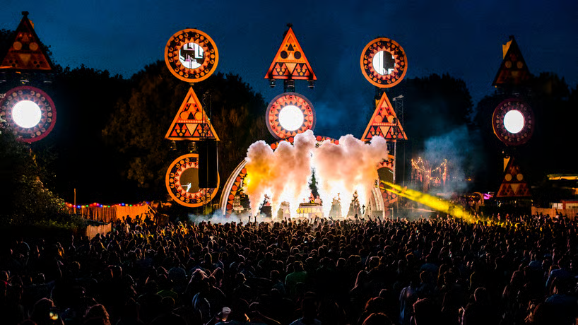
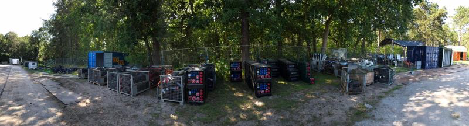

Case study / 2025
Amsterdam
Open Air
Project overview
Amsterdam Open Air is a large-scale music festival held at Gaasperpark in Amsterdam. I worked with Team Infra throughout the build-up phase, contributing to the temporary power and water infrastructure required across the festival site and continuing with operational support during the live event.
My role
Infrastructure
Build-up.
- Installed and distributed temporary power infrastructure across the festival site following technical plans and area requirements.
- Worked on clean water and wastewater infrastructure across multiple areas of the site.
- Prepared and deployed cables, distribution points and infrastructure materials according to the requirements of each area.
- Worked across stages, bars, food areas and other operational spaces throughout the festival site.
- Coordinated infrastructure requirements with other teams as the build progressed.
- Performed infrastructure checks and troubleshooting during the live event.
Project context
The work started with the festival site still largely empty. Each day, the infrastructure team worked through different areas of the technical plan, preparing the materials required and building the power and water distribution needed across the site.
Because almost every department depended on these systems, the work involved continuous coordination with other teams. Stages, bars, food areas and operational spaces all had different requirements, from the type of power distribution needed to the positioning of water connections.
As the build progressed, the infrastructure developed alongside the rest of the festival. Cables, water lines and distribution points had to be installed safely, kept organised across the park and prepared for areas that were still being constructed. By the time the event opened, the systems we had worked on were supporting the site throughout live operations.
Experience
From an empty park to a functioning festival.Working across the full build-up showed me how infrastructure, logistics and production teams come together to physically build an event from the ground up.
Gallery
From the site.

